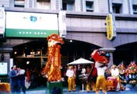
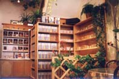

| Bulletin de dernière minute |
Alors que l'humanité fait ses premiers pas dans le nouveau millénaire et une nouvelle ère de son histoire, la Librairie Spirituelle ouvre ses portes à Kaoshiung, ville située au sud de Formose. L'ouverture du magasin le 7 février est une heureuse occasion de mettre à la portée de tous la sagesse de la spiritualité vivante de Maître Ching Hai !
La Librairie offre une gamme complète de publications de Maître, y compris des livres, des cassettes audio et vidéo et des compacts disques. Ces créations spirituelles et artistiques sont exposées dans l'élégante galerie d'art de la Librairie.
Les visiteurs de la section des livres seront enchantés de trouver un espace de lecture tranquille où ils pourront feuilleter les livres de leur choix tout en dégustant des cafés fraîchement préparés, des encas et des sandwiches servis à des prix raisonnables. La Librairie possède également une pièce réservée exclusivement à la méditation, où les initiés des environs et le personnel de la Librairie peuvent se ressourcer.
|
 |
 |
Adresse :
The Spirit Book Store
1st Floor, nø6 Lane 381, Chiu Ju I Road
Sanmin District, Kaoshiung, Formose